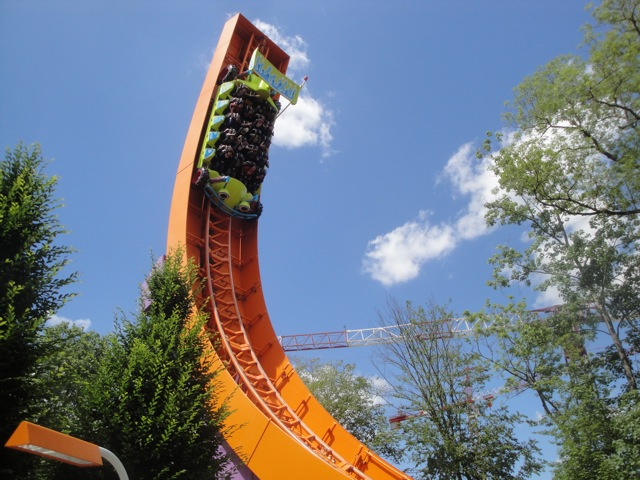
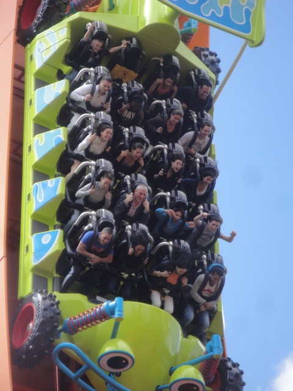
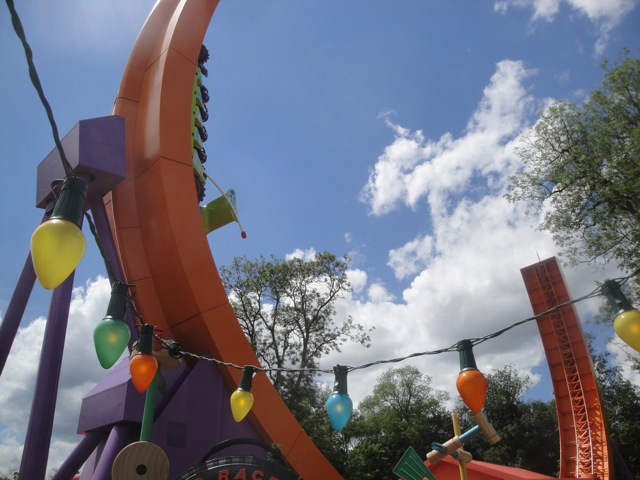

| |
RC Racer Review

We're here at Disneyland Paris. Today's ride we'll be reviewing is RC Racer. Now RC Racer is a very...interesting ride as it is an Intamin Half Pipe that doesn't spin. Now many people would think of that as being well...really lame. And yeah. That does sound like it sucks. The spinning is what makes the half pipes such crazy rides. So this does seem like a dissapointment. But much to my surprise, this ride was actually a lot of fun. After you get in the seats, you're off. You start of slowly not going very high nor very fast, but soon, you're flying up and down the track, gaining lots and lots of speed. And this ride has a lot of hangtime. It's kind of like a mix between a Pirate Ship, a Half Pipe, and Superman: Escape from Krypton back when it ran forewards. It's just a lot of fun. Eventually, the ride does end, and for a Disney Coaster, it may not be the best, but it's definetly a lot of fun. I'd totally recommend it to anyone visiting Disneyland Paris. Just make sure you know about the Single Riders Line.
7/10
Location: Disneyland Paris
Opened: 2010
Built by: Intamin
Last Ridden: July 01, 2012
RC Racer Photos



|